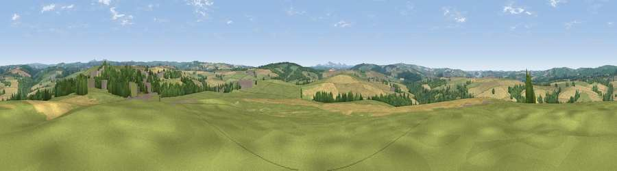

Viewpoint near St Mabyn
#21005 in England · top 44% of its area beats it · near St Mabyn · access?Where it is
The exact computed spot (SX 03475 73125). Click the marker for map links.
Public access: no public right of way or access land is recorded at this exact spot — it may be on private land. Computed from Natural England's CRoW access layer and OpenStreetMap rights of way — not the legal definitive map. Always verify locally.
The view, rendered

A 360° render of this exact spot computed from the terrain model, tree cover and land cover — summer colours, afternoon light, calibrated against photographs of famous viewpoints. Real trees, hedges and buildings will differ in detail.
The panorama
Grey silhouette: terrain skyline in each direction (720 bearings, Earth curvature and refraction included). Dashed green: skyline with trees (+15 m) and buildings (+8 m) as obstacles. Blue strip: how far the ground is visible on each bearing.
Where the view opens
Wedge length = distance to the farthest visible ground on that bearing (vegetation-aware). Rings at 10, 25 and 50 km.
What fills the view
42% grassland · 39% cropland · 17% woodland · 2% built-up
Angular shares of the visible panorama (visual magnitude), not map area. Landscape diversity 0.48 (0–1 Shannon).
Key numbers
More beautiful places nearby
The staircase of upgrades: each row has a higher view potential than everything closer. Driving times are estimates from straight-line distance, calibrated against real road routing — check an actual route before setting out.
| Place | Direction | Drive | Score |
|---|---|---|---|
| Viewpoint near St Mabyn | ENE · 1 km | ~3 min | 52.4 |
| Viewpoint near Mount Charles | SSW · 3 km | ~7 min | 52.7 |
| Viewpoint near St Tudy | NNE · 5 km | ~11 min | 68.5 |
| St Endellion Hill | NNW · 6 km | ~13 min | 75.5 |
| Viewpoint near Port Isaac | NW · 7 km | ~14 min | 77.8 |
| Viewpoint near Port Isaac | N · 7 km | ~15 min | 79.7 |
| Viewpoint near Stenalees | S · 16 km | ~28 min | 88.0 |
| Viewpoint near Crackington Haven | NNE · 23 km | ~38 min | 88.1 |
50.52482, -4.77398 · source: screening · position refined by local search. Computed location — check access rights before visiting.